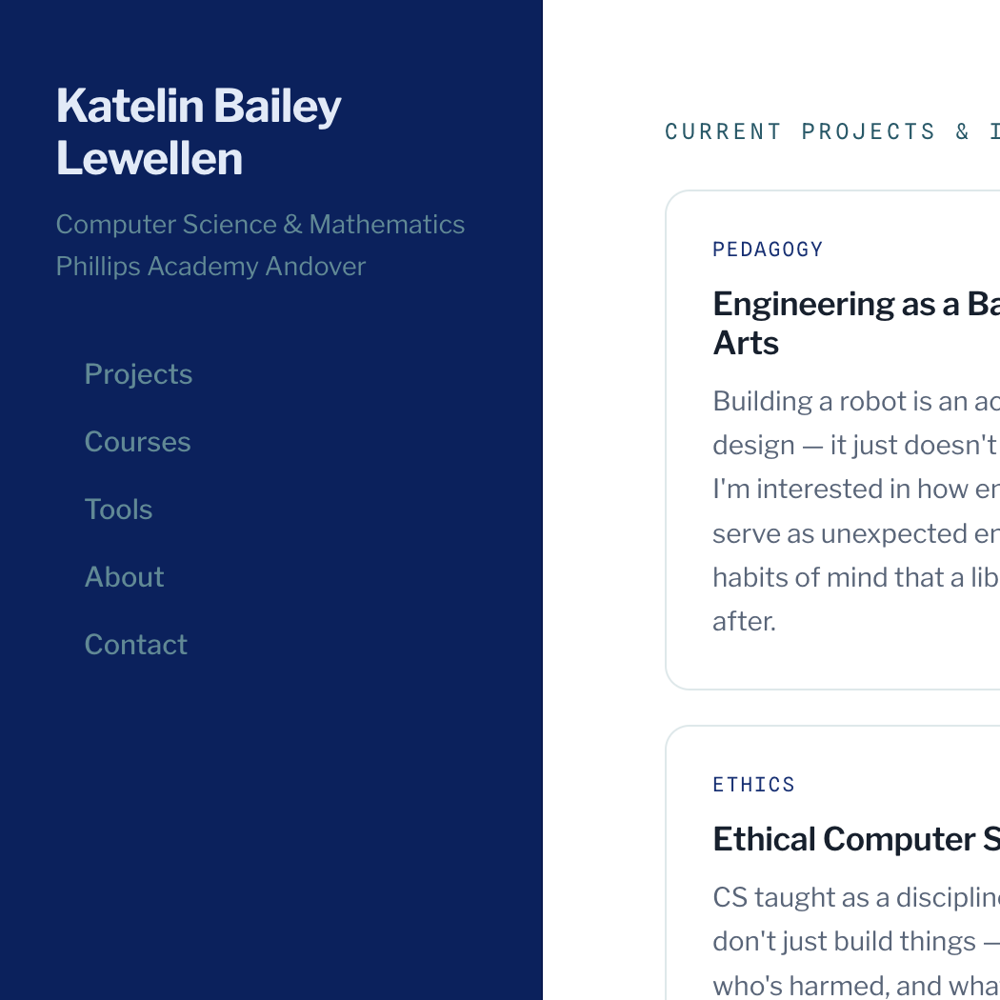
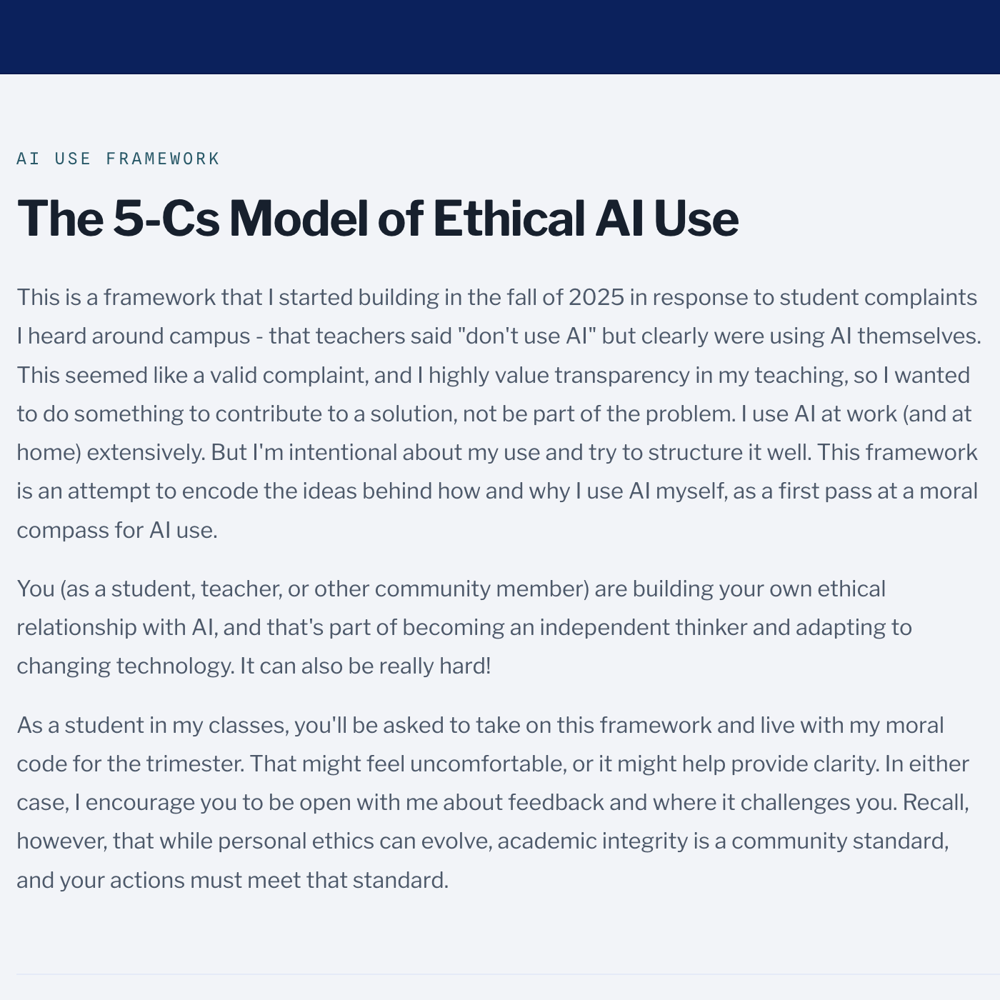
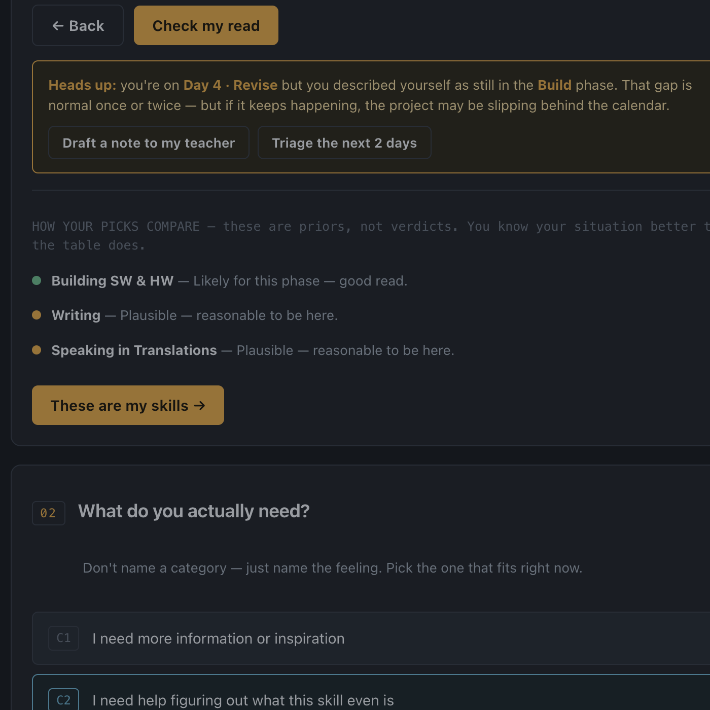
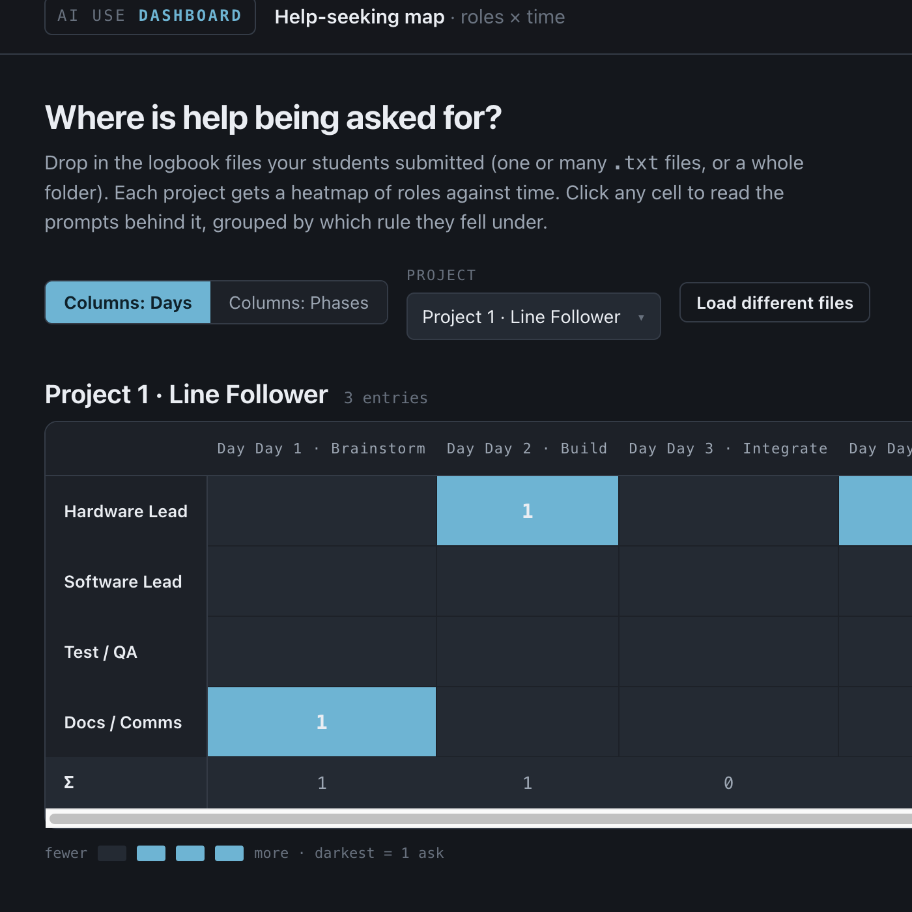
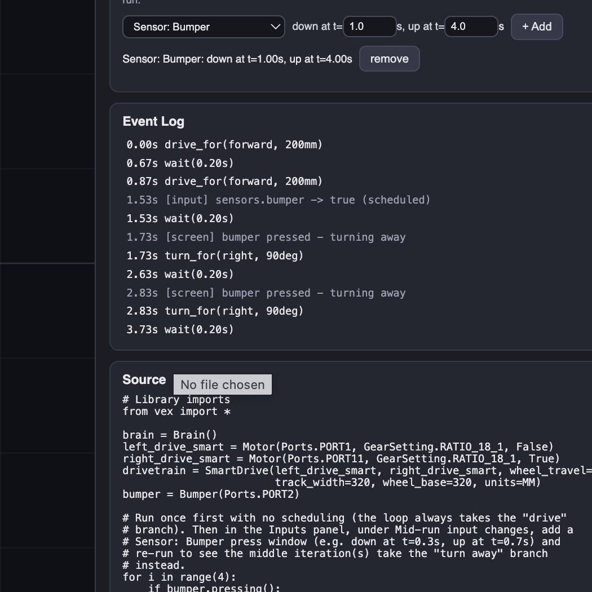
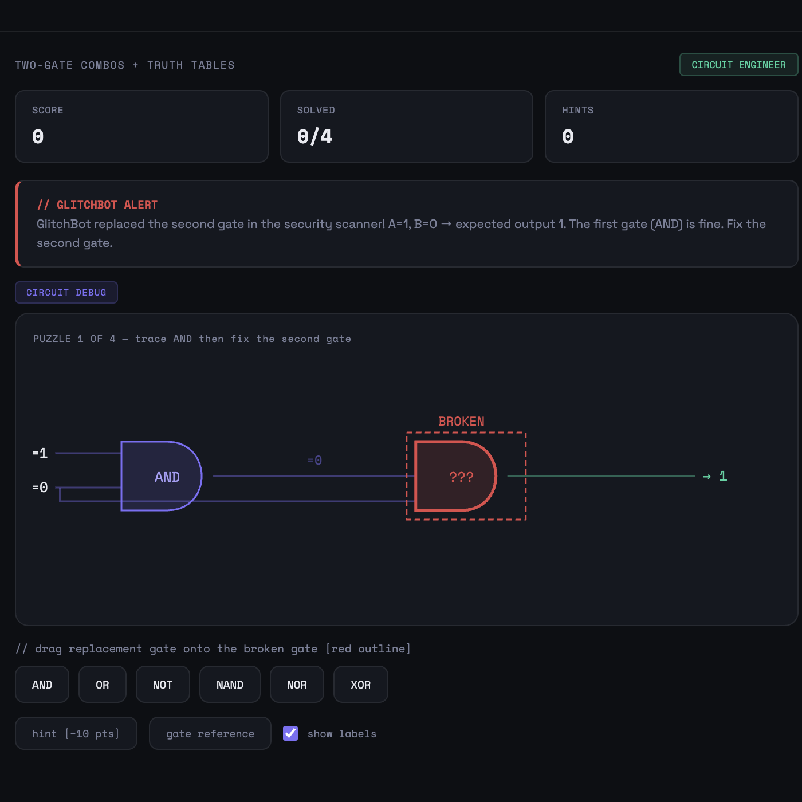

For me, this workshop started with software: what tools am I already behind on? What do I need to know to keep up with students and expand my own practice? And then it morphed. It started with software, and it ended with a question of judgment and responsibility. All the projects I worked on this week circled back to the same question...
When generative resources are abundant — AI, but also a classmate, a tutor, online forums, or a teacher — how do students and teachers decide what responsible delegation is?
I started by learning about a whole host of tools, and practicing with them. But somewhere along the way I stopped building things with the AI tools, directly at least, and started doing participant observation and data collection (sorry, not sorry!) What fascinated me wasn't the individual tools and AI agents. It was watching what happened when people started building, and what their questions revealed about our students' experiences.
The prototypes I played with on Monday and Tuesday are the visible artifacts of this week. The larger, more unexpected takeaway is are conceptual synthesis and a new research agenda that somehow developed in the background of some really good conversations.
I brought a framework with me to the conference. I built it in the fall of 2025, in response to a student complaint that I thought was completely fair: teachers were telling students not to use AI while visibly using it themselves. I didn't want to be part of that problem. I use AI extensively — at work and at home — but I try to be intentional about it. The framework is an attempt to encode those instincts into something I could share transparently with students, and that they could hold me to in return. Here, the teacher-student contract changes into a shared vocabulary to talk with other teachers about our instincts on AI use.
I came here wanting to see if this framework held up under fire and to get specific counterpoints to its categories. And (spoiler alert!) that didn't happen in the way I expected, but boy, did that happen.
The five Cs — Creativity, Core Skills, Clarifying Issues, Correcting Issues, Constructing Plans — classify AI use by cognitive action rather than whether or not AI is allowed. In this system, AI is allowable in everything but reflection, but the manner of use is expected to change based on the C. This framework underlie every other piece from this week.
During the workshop I used AI-assisted development to build and iterate on tools that put the framework to work — in the classroom and the professional development room. Each tool below is labeled by its primary audience.
This pairs with Codes Against Academy — a pre-existing card deck from Josh Lake in which educators (or students) rank AI use scenarios on a single dimension: how ethical or legal is this? It's a useful question, but it collapses a lot of complexity into one axis.
The survey (and/or informal conversation) adds a second dimension of identifying the process, naming which of the 5Cs best describes how the AI was used. The result starts to map the space more precisely than "it depends," which is the direction most AI ethics conversations devolve in.
Collecting data is just that --- data. It's not consensus, but it's not meant to be. So far the disagreements have been as interesting as the agreements, and when people consistently disagree on a scenario, that's useful information.

I generated a landing page organizing these prototype tools for browsing and giving visitors a single place to find everything. Building and hosting the site was itself part of this week's work.

The 5Cs model has a long-form home on the website — student- and teacher-facing guidance for each C. As you'll see below, it's already outdated, but consumable in its current form.

Structured prompt-builder for 411: pick your role, phase of work, skills, and name your need. The tool helps you compose an ask that keeps the thinking yours, with logbook output. Compatible with the AI framework. Very rough draft.

Upload student logbook entries from the 411 help tool (student version) and see a heatmap of days and roles where help was sought, as well as what categories and structures those help requests took. Even rougher draft.

Provides a timestamped execution log from uploaded exp-python code. Allows students to inject events like sensor triggers and controller inputs, and regenerate the execution log. Preliminary low-fidelity visuals trace a path. This is a logic verification tool, not a true simulation or interpreter.Early prototype.

A very quick progressive review game for debugging logic gates. AI theme: "GlitchBot scrambled the digital fortress. Debug broken logic gate circuits before the chaos spreads!" Cute sample, unlikely to be polished.

The thing I kept running into is this: AI can produce almost any tool, document, or artifact you describe to it, which makes "can I build this?" the wrong question. The interesting question to consider becomes "should I build this, and if so, why?" The tool, above, that I'm proudest of from this week isn't technically ambitious. It's pretty basic. But it's work that makes student thinking more visible: it finds the cognitive work and places it squarely in front of the student.
That idea of exposing cognitive work and intentionally centering it turned out to be a more durable criterion than I expected.
One unexpected observation from the week and its focus on metacognition was how analog much of my own process remains. While I spent time building AI-assisted prototypes and often had several requests out to AI agents, I also found myself working at a table covered in scenario cards, sticky notes, handwritten diagrams, and random pieces of paper covered in scribbled notes. Many of the most productive moments came not from prompting a bot, but from sorting examples, sketching relationships, and talking through disagreements with other educators.
That feels important. I might be uniquely analog, but that desire to pause and reflect the slow, arduous way became more important the more often I was prompting. The more I built, the more I needed to stop and judge that work. And building ability came before judgment. This work, then, reinforced my belief that powerful tools do not eliminate the need for human reflection and judgment. In many ways, they increase the need for that judgment. When we don't have to wait to generate prototypes, the challenge is deciding which of the many possible ideas matter, how they should be used, and what responsibilities come with them.
Most arguments I've heard about AI in schools aren't really about AI — they're about classification. Students and teachers often agree that learning matters, and they often agree about the high-level goals such as "AI shouldn't replace the purpose of the assignment". What they don't agree on is a shared language for describing what "replace the purpose of the assignment" means. Purpose for whom? In what role? With what assignment? And what level of challenge and/or accommodation?
Three examples show why these details matter:
- Asking AI to generate a plan for deploying biological weapons.
- Asking AI to draft a page explaining 2D arrays.
- Asking AI to draft a thank-you note.
The first produces an unacceptable outcome regardless of role or process. The third may produce excellent prose while still feeling fundamentally wrong because the value of the task lies in authentic expression.
In some ways, the second is the most interesting: it may be entirely appropriate for a teacher but problematic for a student, depending on the learning goal. As a teacher, it's very likely that I gave AI bullet points and made sure it was an authentic reflection of my knowledge. And drafting a simple note on material is a reasonable use of my capacity, so that I have more energy to bring to my unique contribution (feedback to students, perhaps). But as a student, that ask is probably not an authentic expression of my knowledge and is almost certainly replacing the intended work of understanding and distilling knowledge. It might still be acceptable if doing so reduced labor on the project to a degree that I could access another core part of the project, but it seems much less likely.
The strongest reactions came from scenarios I posed to my fellow attendees — scenarios where generative tools appeared to replace what people expected to be a uniquely human contribution: basic decency between humans, an understanding of when laughing isn't good humor, what it means to give a genuine compliment. Those reactions point toward something beyond cognitive work and towards ownership and authenticity.
These examples suggest that people are evaluating more than one thing at once. They are judging outcomes, processes, roles, and authenticity. The original framework focuses primarily on process. This week's discussions convinced me that those other dimensions deserve more explicit attention.
I've seen students go through the journey of skill acquisition and reflection and metacognition over the course of weeks or months or years, many times before. But this workshop was a different lens on that journey. I spent the last several days in a room for hours at a time watching AI novices build their first apps and slideshows and websites, and prune 10,000 emails from their backlogs, and then have a whole roller coaster of emotions:
- The world is my oyster!
- This is hard
- This is going to take a while to get right because I care so much about landing it just like I envisioned it.
- I think I just built the wrong thing.
- How do I even decide what the right thing is to build??
- I just want the golf-cart version of this tool.
Thinking back through students I've worked with, conversations I've had this week, and peers who echoed those instincts fundamentally changed how I understand the decision-making process around AI. It changed how I think about the framework itself. And it broadened the question. I arrived thinking of the 5Cs as a framework for AI use. I'm leaving thinking of it as a framework for generative assistance more broadly. AI makes the issue visible, but it didn't invent it.
I originally thought the framework was helping people answer:
Is this AI use acceptable?
I now think it is helping them answer:
Am I outsourcing work that should still belong to me?
Early reworks of the framework keep the 5Cs but add clarifying questions like "is the outcome morally sound, regardless of process?"; "does the level of mental exertion change, and if so, where does the extra capacity go?"; "does this accurately represent myself, my lived experience, and my unique contribution to the scenario?". The result is less a set of crisp categories and more a process for reflecting on responsible delegation.
The survey data is still coming in, and some of what it will reveal I don't yet know how to interpret. The categories may not be sufficiently distinct — when educators disagree about which C applies, that's either a gap in the framework or a genuinely contested case, and I need more data to tell which. I don't yet know whether students classify their own AI use the same way their teachers would, or whether expertise level changes the calculus. And there are forms of generative assistance the current model doesn't reach cleanly. Those are the threads I'm pulling on next.
The most important outcome of this week is a research question I didn't know was sitting in the wings all year.
Can we build a framework for the distribution of cognitive work that allows teachers and students to agree on what is actually offloaded and whether it should have been?
The next phase of this work involves:
- refining the written framework,
- collecting educator and student classification data,
- investigating areas of disagreement,
- connecting to existing research on metacognition and CS education,
- and exploring whether a framework-based approach can genuinely improve communication around AI use in schools.
The projects I built this week are prototypes. The larger goal is a shared, cross-audience language for discussing generative assistance — one precise enough that AI becomes a single educational consideration among many, not the topic every conversation collapses into.